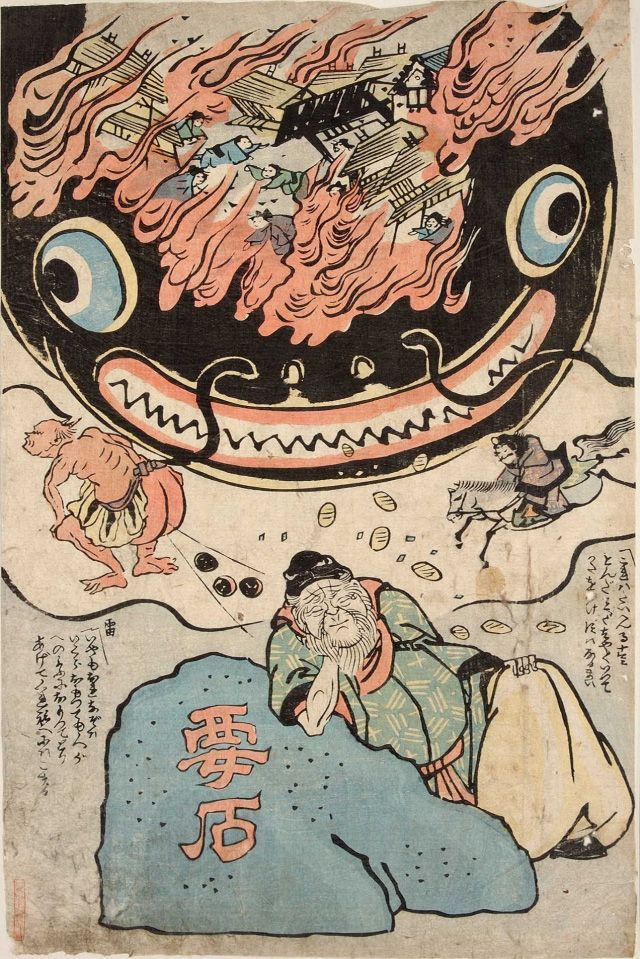

Youkais
Significa, em português, "aparição misteriosa e estranha". De início, não se sabe ao certo sobre a origem deles, pois são frutos da combinação de influências culturais, religiosas e históricas.’.
Referem-se a entidades místicas com características animalescas ou humanas encontradas no folclore do Japão, sendo representadas de variadas formas capazes de serem mudadas ou não. O comportamento deles, classificado em maligno, neutro ou benigno em relação às pessoas, depende de cada situação, o que pode fazê-los provocar tanto o azar quanto a sorte alheia.
Tipos de Youkais
Também é possível chamá-los de ‘ayakashi’, ‘mononoke’ ou ‘mamono’, que incluem alguns gêneros como:
‘Kitsune’, uma raposa que contém a habilidade de se transformar em humanos, frequentemente em belas mulheres;
‘Oni’, ogros ou demônios conhecidos por seu vigor e sua aparência monstruosa, muitas vezes vermelhos ou azuis, com chifres e dentes afiados;
‘Yuki-onna’, mulher da neve que deixa os viajantes desorientados à beira da morte com seu sopro congelante...
Estes são apenas alguns dos diversos tipos de yokai diferentes.
Uma das histórias de yokai mais famosas é a do ‘NAMAZU’, um imenso bagre que vivia no subterrâneo, conhecido por acreditarem que ele era o responsável por causar os terremotos no Japão. Apenas um deus conseguiu o parar: ‘KASHIMA’ o deus da espada e do trovão, que usou a “kaname-ishi” (uma pedra sagrada) para prender o youkai. Contudo, ele ainda conseguia se mover e causar terremotos quando Kashima se distraia. Ele também foi usado para satirizar o governo e depois veio a ser usado de forma positiva (como em amuletos) contra os terremotos.
